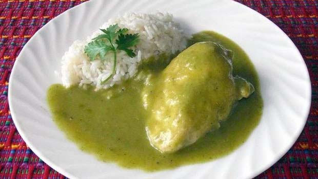
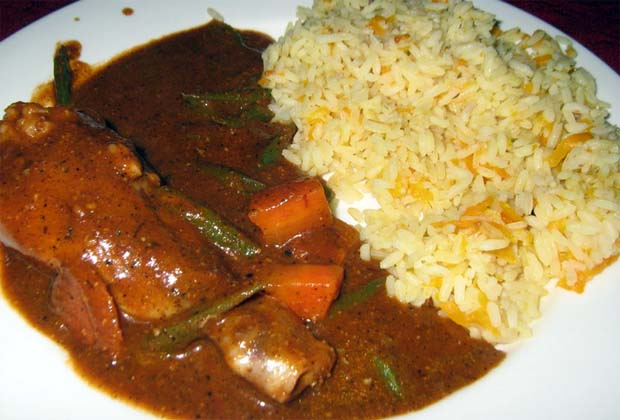

Cocina económica cuidando el planeta
Menú


Histoial
Lo más solicitado
Jocón
Fecha de entrada: Enero 2017
Ingredientes:
- Semillas de calabaza y pepitoria tostadas
- Pechugas de pollo con hueso y sin piel
- Miltomates frescos
- Cilantro lavado y picadito
- Ajo machacado
- Aceite de oliva
- Cebollín picado
- Pimientos verdes picados
- Jalapeños (opcional)
- Sal y pimienta
Se muelen las semillas de calabaza y pepitoria y se colocan aparte. En una cacerola se pone el pollo a cocinar con los miltomates, agua y sal. Llevamos a hervir a fuego medio, después lo bajamos y cocinamos durante 35 minutos. Colamos el caldo y reservamos.
En una licuadora ponemos el caldo de pollo, el cilantro y los miltomates y licuamos hasta que quede bien homogéneo. En otra cacerola con aceite salteamos el ajo, pimientos, cebolla y jalapeños a fuego medio hasta que estén dorados. Añadimos el caldo que ya licuamos, más las semillas molidas y revolvemos constantemente, a fuego bajo sin tapar hasta que la salsa espese.
Agregamos el pollo y sazonamos con sal y pimienta mientras se cocina unos 10 minutos más. Se sirve en un plato hondo con arroz, tortillas de maíz y aguacate.

- Pedro López - Hace 5 días
¿Me encantó?

- Yayis Pérez - Hace 3 días
¿Dónde compro los chiles guaques?
- Elena Cambrán - Hace 8 días
¿Delicioso....?
Pepian
Fecha de entrada: Abril 2017
Ingredientes:
- Carne de res, costilla o pollo
- Chile Guaque y pasa
- Miltomate
- Pepitoria verde
- Ajonjolí
- Tomates maduros
- Cebolla
- Ajo machacado
- Cilantro
- Canela
- Agua
- Chayote
- Papas
- Ejotes o judías
- Sal y pimienta.
Preparación:
En una cacerola ponemos a cocinar la carne con un litro de agua y cuando ya casi esté lista le agregamos las verduras.
- Yayis Pérez - Hace 3 días
¿Dónde compro los chiles guaques?
- Pedro López - Hace 5 días
¿Me encantó?
- Elena Cambrán - Hace 8 días
¿Delicioso....?